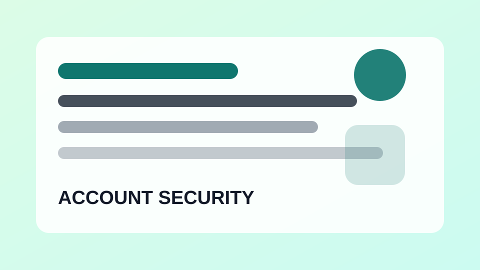

계정/보안구글 계정 보안 설정 기본 순서
비밀번호, 복구 이메일, 2단계 인증을 순서대로 확인합니다.
스마트폰, 앱 설정, 계정 보안, 백업과 생활 체크리스트를 쉽게 정리하는 디지털 생활 가이드
계정 보호와 로그인 점검 방법을 차분하게 설명합니다.

계정/보안비밀번호, 복구 이메일, 2단계 인증을 순서대로 확인합니다.
인증 앱, 문자, 보안 키의 차이를 쉽게 정리합니다.
급한 표현, 짧은 링크, 개인정보 요구를 확인하는 방법입니다.
본인 로그인인지 확인하고 필요한 조치를 취하는 순서입니다.
카페나 공항 와이파이를 사용할 때 확인할 보안 항목입니다.
기기 찾기, 잠금, 계정 로그아웃을 차례대로 정리합니다.
카메라, 마이크, 위치 권한을 필요한 만큼만 허용합니다.
메일 계정은 여러 서비스의 복구 수단이므로 우선 보호가 필요합니다.